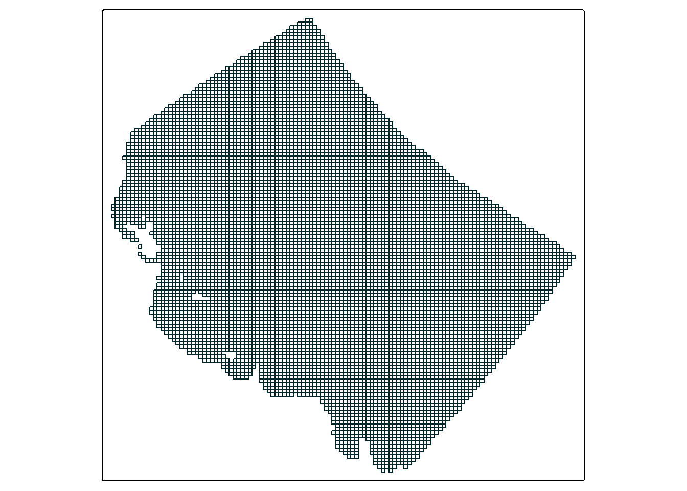

Code
#read in the dry tropics region dataset and start with a lat/long crs
dt_region <- st_read("dt_region.gpkg") |>
st_transform("EPSG:7844")May 23, 2025
In this blog post I’d like to cover the essentials of extracting data from the eReefs platform. First of all, hands up - who’s heard of eReefs? Fair enough if you haven’t. Despite its star power in my world it is still a relatively niche topic. To summarise, eReefs is “a comprehensive view of dynamic marine environment conditions across the Great Barrier Reef from end-of-catchments and estuaries to reef lagoons and the open ocean.” What this means for us is that it has a wide range of modelled environmental datasets that are relatively easy to access, backed by top-notch science, and heavy (i.e. we really get to flex our coding and spatial “muscles”).
The goal today is to learn how to:
There are lots of things we can do once we have got the data, some of these such as creating maps, or converting the data to a tabular format and creating plots are explored in my other blogs. Each of these blogs pick up right where this blog leaves off, and details exactly how you will need to transform and manipulate the data to achieve what you want. In particular, the mapping blog covers how to spatially and/or temporarily aggregate raster data, whilst the plotting blog focuses more on how to conver raster data into a more familar table, and the things you can do from there.
The datasets we are going to look at today are the chlorophyll a dataset, and the nitrites dataset. However there are hundreds of datasets to choose from including water movement variables, water clarity indicators, and a whole host of chemical indicators. Later in this blog I will show you how to obtain a complete list of variables available.
All data produced by eReefs is stored on the National Computing Infrastructure’s (NCIs) THREDDS server which is a server we can interact with in an automated fashion. Don’t be fooled though, accessing the data can still pose quite the challenge and can sometimes seem like you are feeling your way around in the dark.
To assist in the process of extracting data from eReefs we are going to need an extra dataset that details the specific boundaries of a target region within the scope of the eReefs model. I will be using the boundaries of the Dry Tropics region (near Townsville, QLD), however any boundaries within the Great Barrier Reef Marine Park will work fine.
Let’s get into it.
This is just about the only simple step in this blog.
Below I load in my boundaries of the Dry Tropics region, unfortunately this is a custom dataset that cannot be made available for download, however any polygon area within the Great Barrier Reef region will work so I encourage you to create your own.
In a pinch for coordinates? Use these for a simple box:
library(sf)
example_box <- matrix(c(144.227, -24.445, # bottom-left
144.227, -15.195, # top-left
151.329, -15.195, # top-right
151.329, -24.445, # bottom-right
144.227, -24.445), # close the polygon by repeating the first point
ncol = 2,
byrow = TRUE)
#create a polygon geometry and set the CRS
example_box <- st_polygon(list(example_box)) |>
st_sfc(crs = "EPSG:7844")I would first like to note that there are several resources online that contain useful information about accessing data from eReefs. These include:
However, I personally find that most of these resources either A) gloss over what is really happening behind the scenes, or B) don’t provide critical information needed for you to go away and conduct your own analysis (for example, how to see what indicators are available in eReefs). It is these reasons among others that prompted me to write this blog.
Anyway, time to buckle your seatbelts, kids.
The first thing we are going to do today is establish a connection to the database. To do this we are going to need to load the ereefs() package as this contains the handy functions substitute_filename("catalog") and get_ereefs_grids(). First, we will run the substitute_filename("catalog") function, which will return a list of all the available datasets that we can choose from. This list is interactive and requires user input - I have picked “5” - “eReefs GBR1 biogeochemistry and sediments v3.2” as this is the most up-to-date model. However, there are older models and models that have been run under different scenarios if you are interested in those instead.
Once we have made our selection it will return a url. This url is how we are going to connected to the correct database, if you are interested, this is a manual view of the range of data that we are choosing from.
We can these use this url as an argument in the get_ereefs_grids() function from the ereefs package.
If the lines of code above worked, congratulations - you can access the data. Now take a look at the object grids and you will probably realise that we are only 3 lines of code in and things are already pretty intense - WTF is this object and what does it tell us?
What we just did is get the dimensions of the dataset. The grids object should be a list of length 3, the 3 items in the list should be “x_grid”, “y_grid”, and “z_grid”, each of the these tell us something about one dimension of the data (the longitude, latitude, and depth). Unfortunately, because each of these items are bloody huge manually viewing the object to try and learn about it is essentially useless. Below we use some simple code to explore the grids.
The x_grid tells us about longitude. The min x value is 142.018379, the max x value is 155.379686, and the dimensions of the x_grid are 511, 2390.
The y_grid tells us about latitude. The min y value is -28.600577, the max x value is -7.386315, and the dimensions of the y_grid are 511, 2390.
By looking at the x and y values we can get an idea of where we are in the world:
V1 V2 V3 V4 V5
1 -28.59505 -28.57945 -28.56385 -28.54808 -28.53231
2 -28.59506 -28.57942 -28.56378 -28.54800 -28.53222
3 -28.59508 -28.57940 -28.56371 -28.54792 -28.53214
4 -28.59510 -28.57938 -28.56367 -28.54787 -28.53206
5 -28.59511 -28.57937 -28.56362 -28.54781 -28.53199#create a bbox
ereefs_extent_bbox <- matrix(c(xmin, ymin, # bottom-left
xmin, ymax, # top-left
xmax, ymax, # top-right
xmax, ymin, # bottom-right
xmin, ymin), # close the polygon by repeating the first point
ncol = 2,
byrow = TRUE)
#create a polygon geometry and set the CRS
ereefs_extent_bbox <- st_polygon(list(ereefs_extent_bbox)) |>
st_sfc(crs = "EPSG:7844")
tm_shape(World) +
tm_polygons() +
tm_shape(ereefs_extent_bbox) +
tm_polygons(col = "red",
fill = NULL)The z_grid tells us about depth (eReefs models the entire water column). The min z value is -4000m, the max x value is 0m, and the dimensions of the z_grid are 45. These values tell us at what depth each layer of the model is at, and how many layers there are.
In combination these three grids tell us everything we need to know about the data. Let’s first look at the x_grid, as we noted above, the dimensions of the x_grid are 511, 2390, thus picture a table that has 511 rows, and 2390 columns. Once again, here is a snapshot of the first five rows and columns of the grid:
V1 V2 V3 V4 V5
1 151.8048 151.8046 151.8044 151.8042 151.8039
2 151.8140 151.8138 151.8137 151.8134 151.8132
3 151.8231 151.8230 151.8229 151.8227 151.8226
4 151.8324 151.8323 151.8322 151.8321 151.8319
5 151.8416 151.8416 151.8415 151.8414 151.8413In contrast, let’s now consider the y_grid, this grid has the exact same dimensions as the x_grid, and we can picture it much the same way:
V1 V2 V3 V4 V5
1 -28.59505 -28.57945 -28.56385 -28.54808 -28.53231
2 -28.59506 -28.57942 -28.56378 -28.54800 -28.53222
3 -28.59508 -28.57940 -28.56371 -28.54792 -28.53214
4 -28.59510 -28.57938 -28.56367 -28.54787 -28.53206
5 -28.59511 -28.57937 -28.56362 -28.54781 -28.53199If we combine these two grids together we can get a table in which every cell contains a pair of values, one x_grid value and one y_grid value:
| 1 | 2 | 3 | 4 | 5 | |
|---|---|---|---|---|---|
| 1 | 151.8048, -28.59505 | 151.8046, -28.57945 | 151.8044, -28.56385 | 151.8042, -28.54808 | 151.8039, -28.53231 |
| 2 | 151.8140, -28.59506 | 151.8138, -28.57942 | 151.8137, -28.56378 | 151.8134, -28.54800 | 151.8132, -28.53222 |
| 3 | 151.8231, -28.59508 | 151.8230, -28.57940 | 151.8229, -28.56371 | 151.8227, -28.54792 | 151.8226, -28.53214 |
| 4 | 151.8324, -28.59510 | 151.8323, -28.57938 | 151.8322, -28.56367 | 151.8321, -28.54787 | 151.8319, -28.53206 |
| 5 | 151.8416, -28.59511 | 151.8416, -28.57937 | 151.8415, -28.56362 | 151.8414, -28.54781 | 151.8413, -28.53199 |
What we have now is a table where every single cell corresponds to a cell (value) in the eReefs model. That is to say, that for every cell in this table we just made, there is information about water temperature, turbidity, nutrients, etc., etc. To take things even further, if we include the z dimension depth we would have 45 copies of this table, with each copy of the table corresponding to 1 depth layer in the model.
Add that all up and we have a table that has 1221290 cells, where the table is stacked 45 times in a row (depth), where every cell in every table has more than 200 different environmental variables. Hopefully that makes sense.
OK so sure, that’s kind of cool I suppose, but why does this matter? Who cares?
Well, the reason this matters is that we can use this conceptual understanding of the model to be able to sift through all that data to pinpoint the exact thing that we want. You could use this almost like a GPS. For example, If I wanted to figure out the water temperature at 151.4, -23.2, at a depth of -40m, all I would need to do is say “give me the information at row 2, column 4”.
To explain how we are going to specify our target I am going to keep the analogy of the table going. The idea is simple, let’s once again imagine the table, the table is the exact same dimensions as the table we were talking about above, except the values in this table are all just “FALSE”:
| 1 | 2 | 3 | 4 | 5 | |
|---|---|---|---|---|---|
| 1 | FALSE | FALSE | FALSE | FALSE | FALSE |
| 2 | FALSE | FALSE | FALSE | FALSE | FALSE |
| 3 | FALSE | FALSE | FALSE | FALSE | FALSE |
| 4 | FALSE | FALSE | FALSE | FALSE | FALSE |
| 5 | FALSE | FALSE | FALSE | FALSE | FALSE |
let’s say that we want to extract all the information within 151.2 to 151.4, and -23.3 to -23.5. What we then do is figure out where those cells are (based on their row and column number) using the table in the previous section, and then set those cells to TRUE in our current table:
| 1 | 2 | 3 | 4 | 5 | |
|---|---|---|---|---|---|
| 1 | FALSE | FALSE | FALSE | FALSE | FALSE |
| 2 | FALSE | FALSE | FALSE | FALSE | FALSE |
| 3 | FALSE | TRUE | TRUE | TRUE | FALSE |
| 4 | FALSE | TRUE | TRUE | TRUE | FALSE |
| 5 | FALSE | TRUE | TRUE | TRUE | FALSE |
We can then use this table to communicate with the database and tell it “only give me data that lines up with my true values, remove the rest”. And that’s kind of it! If all goes well, the database will return the exact data you requested. let’s see how that looks in code.
It is important to highlight here that the code we are about to write and the data we are working with does not take the form of an actual table, the above description is just a handy analogy to describe what is happening.
The first thing we are going to do is get the boundaries of our target area.
xmin ymin xmax ymax
146.14439 -19.70039 148.29854 -17.62597 Then we use a series of logical steps that check the xmin, xmax, ymin, and ymax values of our target area and changes cells that fall inside these bounds to TRUE (those outside are given FALSE). There are also some cells that start as NA, so we change those to FALSE.
#if the value is inside the bounds of each of our coords, change it to TRUE. Those outside are automatically false
true_false_array <- x_grid >= target_bounds[1] &
x_grid <= target_bounds[3] &
y_grid >= target_bounds[2] &
y_grid <= target_bounds[4]
#if the value is NA, change it to false.
true_false_array[is.na(true_false_array)] <- FALSESo what we did above was create an array that contains TRUE and FALSE values. The dimensions of this array perfectly match the dimensions of the data. Next up, we need to find the exact positions in the array where the values change from FALSE to TRUE (noting that TRUE means inside our area of interest). These positions will then correspond to the positions we need to send to the database. Here is the code to achieve this:
#return the row index for every row that contains at least one true value:
true_rows <- which(apply(true_false_array, 1, any))
#find the first row that contains a true value
first_row <- true_rows[1]
#find the number of rows that contains a true value
num_of_rows <- tail(true_rows, n = 1) - first_row
#return the row index for every row that contains at least one true value:
true_cols <- which(apply(true_false_array, 2, any))
#find the first col that contains a true value
first_col <- true_cols[1]
#find the number of cols that contains a true value
num_of_cols <- tail(true_cols, n = 1) - first_colOur values are as follows:
With that done we now have our “coordinates” to send to the database to tell it where to extract data from.
Almost there, only one more part. In this section we are going to learn how to specify what variable to download. So far all I have told you is that eReefs has hundreds of variables, that’s cool and all but what are their names? How do you access them? Thankfully the function nc_vars() from the ncmeta package can help us. Simply run the function for the input path we figured out earlier and it will return a table with all the variables available:
Be careful though, the dimensions on some of these variables are different, and you might need to provide more (or less) information to make it work. For example, some variables might not have a depth (z) aspect to them and you would need to drop this from the data request.
By looking at this table we can establish that to get the chlorophyll a and the nitrites datasets we need to supply the names “Chl_a_sum” and “NO3”.
It’s finally time, after all that we can start our data extraction!
The function we are going to use to extract the data is the read_ncdf() function from the stars package. This function takes several inputs, such as the source of the data, the variable we are interested in, and the “coordinates” we are interested in. Thanks to all the work we have done above we have all of the “hard” information, however there are still a few little things to tick off.
When we are talking about the “coordinates” of the data I have previously spoken about the x, y, and z dimensions of the data (the longitude, latitude, and depth). However there is one more dimension I haven’t spoken about yet - time. Yes this data actually has 4 dimensions we need to specify. To keep things simple we will start off my just asking for a single point in time, but we’ll later retrieve a full time series. So, when we supply the details we are essentially going to tell the database,
In code, this is how it looks:
Which we can supply to the read_ncdf function (it will take a little while to run, that’s fine):
If that code ran, congratulations you have official got the data.
What, there’s still more to go? Unfortunately yes.
First up, we are going to be visualising lots of layers, this means we need to make sure our CRS match across everything. From here on out I will be using, “EPSG:7855”. This is a projected crs (measures in meters) and is particularly useful when we do our cropping steps further down.
Then try and visualise the data:
#make a simple palette using our website colours
my_pal <- c("#A7C3C7", "#7EA0A7", "#55807D", "#2D6056", "#00402F", "#00252A")
#create a simple plot of the data
tm_shape(extracted_data) +
tm_raster(col.scale = tm_scale_intervals(n = 6,
values = my_pal,
label.format = list(digits = 2)),
col.legend = tm_legend(reverse = T)) +
tm_shape(dt_region, is.main = T) +
tm_polygons(fill = NULL,
col = "black")Rather ugly yeah? Also WTF is up with that scale? And why does the data extend past our area of interest?
“Removing” the land cells is rather easy, simply pick a value that your dataset would never reach (e.g. 1000ug/L) and change all cells with a value greater than that to NA. Visually, this fixes both points 1 and 2:
#change all land values to NA
extracted_data[(extracted_data > 1000)] <- NA
#create a simple plot of the data
tm_shape(extracted_data) +
tm_raster(col.scale = tm_scale_intervals(n = 6,
values = my_pal,
label.format = list(digits = 2)),
col.legend = tm_legend(reverse = T)) +
tm_shape(dt_region) +
tm_polygons(fill = NULL,
col = "black")That’s already much better looking. However we still have the problem of data extending past our area of interest.
The next step I’d like to explore is conducting an initial crop of our data, this is because as we noted above, the data extends outside our area of interest, despite our efforts when requesting the data. This is for two main reasons:
Raster data can be provided in a range of different grid types. The most common, and the one you are probably familiar with is the regular grid. In this type of grid each cell is consistent. In a curvilinear grid, cells bend and twist to allow for a higher concentration of cells in area that require greater resolution. This has the benefit of reducing file size, but the downside of inflicting psychic damage to the uninitiated spatial analyst.
If you would like to learn more about different grid types, check out this handy explainer.
To help us understand this, here is a map showing the bounding box in red that we used to request the data:
#create a simple plot of the data
tm_shape(extracted_data) +
tm_raster(col.scale = tm_scale_intervals(n = 6,
values = my_pal,
label.format = list(digits = 2)),
col.legend = tm_legend(reverse = T)) +
tm_shape(dt_region) +
tm_polygons(fill = NULL,
col = "black") +
tm_shape(st_as_sfc(target_bounds)) +
tm_polygons(fill = NULL,
col = "#E6AA04")which demonstrates how the top left and bottom right corners are defining the region in which data is collected - at least a little bit. In this map we can also start to see the effect of the curvilinear grid and how it twists the data. A closer look at the actual grid lines of the data might demonstrate this a bit clearer:

Especially if you compare this to a linear grid representing the same area:
So what can we do with this new found knowledge? Well for one thing it gives us a better understanding of how the data is organised, for example if you run extracted_data you might now understand why offset is NA - because the offset changes per cell. But secondly, it is about to play an important role in cropping the data.
We can crop almost any stars object (curvilinear grid, or regular grid) using st_crop() and it will broadly do what we want:
However you may notice that the st_crop() function is providing a warning. like this:
“Warning in st_crop.stars(st_transform(extracted_data,”EPSG:7844”), dt_region) : crop only crops regular grids: maybe use st_warp() first?”
Additionally, if you inspect the dimensions of the original data in comparison to the cropped data it is clear something funky is going on:
Indeed, if you inspect each of the objects again, using extracted_data, and curv_lini_cropped_data you can see that the only thing that really changed is that there are now more NA values. So what st_crop() actually did in this scenario was just replace values outside our area with NA:
#create a simple map
tm_shape(curv_lini_cropped_data) +
tm_raster(col.scale = tm_scale_intervals(n = 6,
values = my_pal,
label.format = list(digits = 2),
value.na = "#E6AA04"),
col.legend = tm_legend(reverse = T)) +
tm_shape(dt_region) +
tm_polygons(fill = NULL,
col = "black") +
tm_shape(dt_perspective, is.main = T) +
tm_polygons(fill = NULL,
col = NULL)Which is not necessarily a bad thing, but can become a big problem if we are particularly concerned about file size.
The reason this occurs is mostly a mystery to me, but I believe it has to do with the way the grid cells on a curvilinear raster are set out - and that those NA cells are needed to provide positioning context to the rest of the cells.
The solution to this is of course what was recommended in the original warning message - to use st_warp() to shift the data from a curvilinear grid onto a regular grid. This is thankfully not to difficult, and only has four main steps:
#convert our curvilinear object into just a bbox then update the crs on the bbox
curvilinear_bbox <- extracted_data |>
st_bbox() |>
st_as_sfc()
#get a linear grid target with the same dimensions (number of cells) as our curvilinear grid
reg_stars <- st_as_stars(curvilinear_bbox, #using the bbox to provide the xmin, xmax etc.,
nx = dim(extracted_data)[[1]], #and the dimensions to provide the x and y count.
ny = dim(extracted_data)[[2]],
values = NA_real_) #Fill each cell with NA
#run st warp, it requires a curvilinear object, and a regular object as a target
warped_data <- st_warp(extracted_data, reg_stars)With the warped data we can then use the st_crop() function again:
#create a simple map
tm_shape(reg_grid_cropped_data) +
tm_raster(col.scale = tm_scale_intervals(n = 6,
values = my_pal,
label.format = list(digits = 2),
value.na = "#E6AA04"),
col.legend = tm_legend(reverse = T)) +
tm_shape(dt_region, is.main = T) +
tm_polygons(fill = NULL,
col = "black") +
tm_shape(dt_perspective, is.main = T) +
tm_polygons(fill = NULL,
col = NULL)Thus actually cropping the data to the bounding box of our target area, and create a map with significantly few NA cells, specifically the curvilinear version has 74496 NA values, and the regular grid version has 17086 NA values - a difference of 57410
If I haven’t put you into a coma yet I have a small bonus round for you; extracting multiple years. I will really quickly blast through this as it is not particularly different. The only changes is to supply extract layers to “count” along in the dimensions request:
This is still supplied to read_ncdf() the same way:
And voila, a multi-day dataset.
stars object with 4 dimensions and 1 attribute
attribute(s):
Min. 1st Qu. Median Mean 3rd Qu. Max.
Chl_a_sum 0.005951627 0.01016834 0.01581802 2.387412e+34 0.475909 1e+35
dimension(s):
from to offset delta refsys
i 1 312 NA NA WGS 84 (CRS84)
j 1 314 NA NA WGS 84 (CRS84)
k 1 1 NA NA NA
time 1 3 2020-03-07 02:00:00 UTC 1 days POSIXct
values x/y
i [312x314] 145.1,...,149.3 [x]
j [312x314] -20.5,...,-16.84 [y]
k 44
time NULL
curvilinear gridI think all that is left now is to save the data, which is done using write_stars(). However there is one little trick to remember here, the write_stars() function only expects either a 2D (x,y) or a 3D (x,y,time/band) object - it does not support 4D objects (x,y,depth, time) and it also does not support empty or redundant dimensions i.e. those with only one layer. If you try to save a 4D object, or an object with a single time step or depth layer the function will fail. To fix this we can simply drop dimensions with 1 value first.
#drop dimensions with only 1 value
reg_grid_cropped_data <- reg_grid_cropped_data[drop = TRUE]
#save the object
write_stars(reg_grid_cropped_data, "regular_grid_chla.nc")
#FYI this also works on curvilinear data just fine
curv_lini_cropped_data <- curv_lini_cropped_data[drop = TRUE]
#save the object
write_stars(curv_lini_cropped_data, "curvilinear_grid_chla.nc")As a precaution it is always a good idea to read your data back in to the environment to make sure everything works just fine. You’ll be glad you did because there is actually a small quirk I have found where a time dimension with more than 1 value gets read back in as an attribute (no idea why).
Band1, Band2, Band3, stars object with 2 dimensions and 3 attributes
attribute(s):
Min. 1st Qu. Median Mean 3rd Qu. Max.
Band1 0.006107863 0.009816753 0.01446432 2.387412e+34 0.4554679 1e+35
Band2 0.006179249 0.010277151 0.01649703 2.387412e+34 0.4733291 1e+35
Band3 0.005951627 0.010424919 0.01740555 2.387412e+34 0.5129399 1e+35
dimension(s):
from to offset delta refsys x/y
x 1 312 0 0 WGS 84 (CRS84) [x]
y 1 314 0 0 WGS 84 (CRS84) [y]I’m not sure why this happens, and it seems to also happen with the practice datasets provided with the stars package, so I am going to assume it is intended behavior. The fix is to grab a vector of the time dimension values before you save, then “merge” the attributes together to recreate the time dimension, and update the dimension values with the vector you got before saving. You will also have to update the attribute name again.
#get vector of time values
time_vals <- st_get_dimension_values(extracted_data_multi_day, "time")
#merge "attributes" (time) back together
multi_day_data <- merge(multi_day_data)
#update time dimension values and names, then update the attribute name
multi_day_data <- multi_day_data |>
st_set_dimensions(3, time_vals,
names = c("x", "y", "time")) |>
setNames("Chla")That concludes this post today. If would like to know whats next, I would recommend checking out my other two blog posts that make use of this data:
As always I would like to remind you to thoughtfully consider everything you read on the internet. This blog is my own work based on my own research into the topic. There may be practices I use that aren’t considered “best practice” that I am not aware of, and I highly recommend that you do further exploration into the topic if it is something that interests you. I suggest checking out:
sf and terra packages, but still has excellent and relevant information), andstars - my package of choiceIf you like the content, please consider donating to let me know. Also please stick around and have a read of several of my other posts. You'll find work on everything from simple data management and organisation skills, all the way to writting custom functions, tackling complex environmental problems, and my journey when learning new environmental data analyst skills.
A work by Adam Shand. Reuse: CC-BY-NC-ND.
adamshand22@gmail.com
This work should be cited as:
Adam Shand, "[Insert Document Title]", "[Insert Year]".